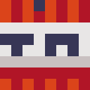

Wally
Fundador- Quién es
- Uno de los tres del principio. El que empuja los proyectos hasta que existen.
- Qué ha hecho
- Los Extremos de Wally, su serie pública de Minecraft extremo, y el canal de la comunidad.
- A qué se dedica
- A abrir servidores nuevos antes de terminar el anterior.
- Qué piensa hacer
- Uno todavía más extremo. Nadie se lo ha pedido.